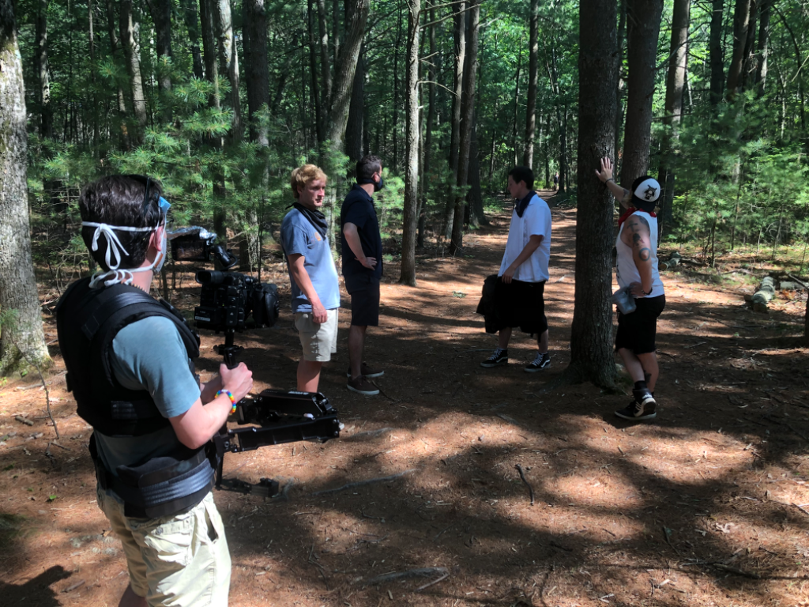

About
About Zac Scott
Zac Scott is an independent filmmaker from New England. He graduated from college with a study in English and Film. After graduation he wrote several film scripts and entered into a relationship with an access TV station, allowing him to realize them on video. Since then he has purchased his own equipment and has continued to experiment with stories. In the last few years, he has produced 5 dramas. One is called As Crazy As You Are which was supported by a grant from the Massachusetts Arts Council and premiered at the Happenstance Horror Fest in Haverill, MA. He also produced a drama called Hard Take which was awarded a prize as the Best Dark Comedy. He is currently in the editing process for his most recent film, Exit-Seeking, which will release next year. Zac also plays music in a couple groups, and records music which is streaming online.
Contact
If you would like to inquire about film work or projects, use the details below.
Email: zscott1212@gmail.com
Phone: 978-761-6478
